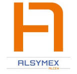
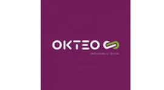
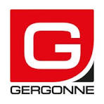

Mise en place d'une infrastructure Wi-Fi invité hautement sécurisée (Solution pfSense + Bornes HPE Instant On).

Maintien en condition opérationnelle (MCO) de parcs informatiques clients.

Support technique de proximité et migration de parc.